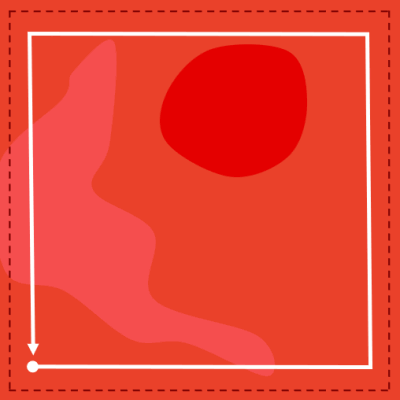
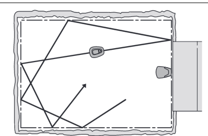
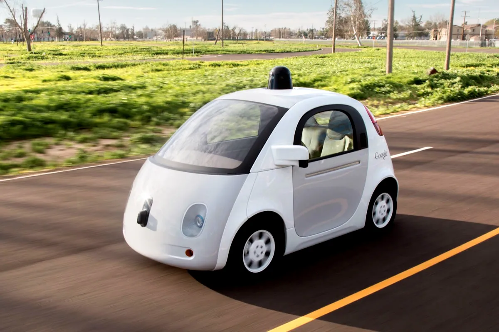

Kontroller roveren på exoplaneten
Vibenshus Gymnasium
Introduktion
Efter opdagelse af exoplaneten og en succesfuld rumrejse dertil, er roveren netop landet og klar til mission.

Roverens mission er at udforske omgivelserne og søge efter tegn på liv.
Rumagenturet vil have jer til at designe og implementere nye algoritmer til roveren, så den kan løse missionen. I kan teste jeres algoritmer i roversimulatoren.
Mission 01
Afgrænsning af området
Roveren er landet i et område i nærheden af VG-krateret. Roverens første mission er at afgrænse et kvadratisk areal på 400 m gange 400 m. Roverens ønskede sti er vist med hvid på figuren.

Roversimulering
For nu kan roveren forstå følgende instruktioner:
rover.forward(afstand)rover.left(vinkel)rover.right(vinkel)
I kan f.eks. afprøve følgende instruktioner ved at indsætte dem det passende sted i koden i roversimulatoren:
rover.forward(123) rover.left(42) rover.forward(213)
Mission 02
Optimering af koden

De nærmeste stjerner, Alfa Centauri, er beliggende 4.24 lysår, hvilket svarer til 9.4 trillioner km. For at kunne kommunikere med en rover på en exoplanet så langt væk, er det derfor vigtigt at optimere koden, som skal sendes afsted.
Rumagenturet vil altså have jer til at mindske antallet af linjer med kode. Til at kunne gøre det, kan man f.eks. anvende en for-løkke.
For-løkker
For-løkker kan anvendes, når man skal udføre bestemt kode et fast antal gange. Hvis man vil printe 3-tabellen ud til skærmen, kan man naivt skrive
print(3) print(6) print(9) print(12) print(15) print(18) print(21) print(24) print(27) print(30)
eller kortere med en for-løkke
for i in range(10):
print(3*(i+1))
Hvilken kode ville I anvende, hvis I skulle sende den til en rover på en fjern exoplanet?
Omskriv jeres kode fra mission 01, så den bliver så kort som mulig ved at anvende et for-løkke.
Roversimulering
Mission 03
Udforskning af hele området
Efter at området er blevet afgrænset, er det nu tid til at lave en detaljeret analyse af det. For at kunne gøre dette, skal roveren passere over alle dele af området. En systematisk måde at gøre dette på, er ved at følge den anviste rute på figuren. Sørg igen for at optimere koden, så mængden af kode, der skal sendes til roveren er så lille som mulig.

Roversimulering
Mission 04
Alternativ rute
I denne mission skal I implementere en algoritme, så roveren får gennemløbet hele området men gennem en alternativ rute. I kan se ruten på figuren. Igen skal I optimere jeres kode så meget som muligt.

Roversimulering
Mission 05
Undersøgelse af kratere
Da roveren analyserede hele området i de tidligere missioner, fandt den tre små kratere. Rumagenturet vil gerne have, at I skriver en algoritme, som får roveren til at besøge de tre kratere til nærmere undersøgelse. Ruten roveren skal følge er markeret på kortet.

Bonusmission
Som en bonusmission vil rumagenturet gerne have roveren til at køre i en (halv)cirkel rundt om hver af kraterne, når den møder dem. (Halv)cirklerne skal ligge på ydersiden af den markerede firkant, som roverens rute er markeret med. Til at lave (halv)cirkler kan man benytte metoden rover.circle(radius, extend).
Her er nogle eksempler.
# Tegner en cirkel med radius på 30. Kører mod uret rundt rover.circle(30) # Tegner en cirkel med radius 50. Kører med uret rundt rover.circle(-50) # Tegner en halvcirkel med radius på 20, som kører mod uret rundt rover.circle(20, 180) # Tegner en halvcirkel med radius på 20, som baglæns rundt kører med uret rover.circle(20, -180)
Roversimulering
Mission 06
Pas på kløften!
Under afsøgningen af landingsområdet har roveren fundet 3 nye kratere, som skal undersøges nærmere. Kraterne er dog placeret i nærheden af en stor kløft, så pas på!
Skriv en algoritme, som får roveren til at besøge de tre kratere uden at komme for tæt på kløften. Efter at have besøgt alle tre kratere skal roveren vende tilbage til sin startposition uden at køre i kløften.

Bonusmission
Som en ekstra udfordring vil rumagenturet gerne have jer til at markere hvert af kraterne med et bogstav. Helt bestemt skal bogstaverne E S A anvendes.
Få roveren til at skrive E, S og A i hvert af kraterne ved hjælp af det spor, roveren skaber efter sig.
Roversimulering
Mission 07
Automatisk overvågning af området
Indtil nu har roveren kun gjort, hvad I som programmører har beordret den til, altså kørt efter en fastlagt rute/algoritme.
I denne mission skal I få roveren til automatisk at overvåge hele området. I skal forestille jer, at roveren bare er ligesom en robotplæneklipper, som I nok allerede kender.

De simpleste robotplæneklippere fungerer på følgende måde:
- Ved start vælges en tilfældig retning (vinkel) inden for et givent interval.
- Herefter køres der ligeud, indtil en kant rammes.
- Når en kant rammes, bakkes der tilbage et lille stykke.
- Efter bakket vælges endnu en gang en tilfældig retning, og der køres ligeud i denne nye retning.
Herefter gentager punkt 3 til 4 sig.
For at kunne implementere den ønskede algoritme skal I have kendskab til while-løkker, if-statements samt tilfældige tal (random numbers).
Her er et eksempel på brugen af alle tre dele:
import random
while True:
tilfaeldigt_tal = random.uniform(0, 10)
if tilfaeldigt_tal > 7:
print("Tallet er større end 7")
break
print("Tilfældigt tal = " + str(tilfaeldigt_tal))
Bonusmission
Efter lang tids overvågning har man fundet ud af, at der intet er af interesse i det røde krater. Derfor er det unødvendigt at overvåge dette.
Udvid algoritmen fra tidligere, så roveren ikke kører ned i krateret. Roveren er udstyret med en LIDAR (LIgt Detection And Ranging), som kan måle afstande fra roveren hen til angivne punkter. Man kan anvende metoden Rover.distance((20, 30)), hvis man vil have afstanden mellem roveren og punktet (20, 30).
